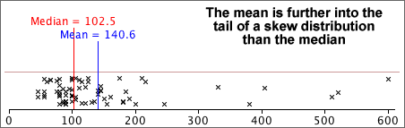

Although both describe aspects of the 'centre' of a distribution, the median and mean are not the same and can occasionally have very different values.
Social vs economic indicator
For some data sets, the median can be considered to be a social indicator, whereas the mean can be interpreted as an economic indicator. In a company,
Outliers
An outlier has little effect on the median, but affects the mean more strongly. The median is said to be more robust.
Skew distributions
When a distribution is fairly symmetrical, the mean and median are similar, but if the distribution is skew, then the mean is usually further into the tail of the distribution than the median.
